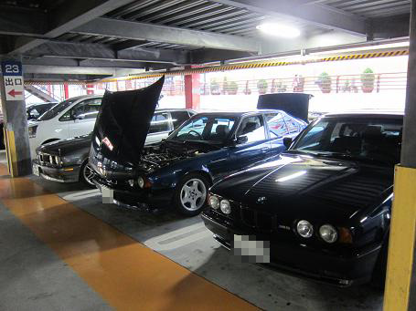
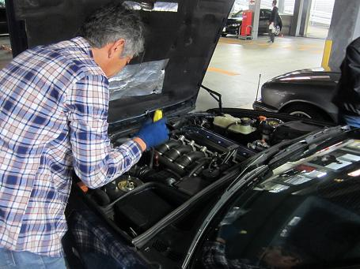
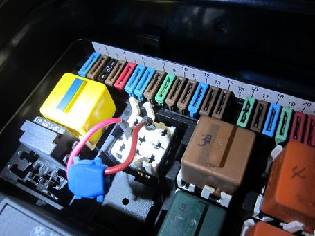
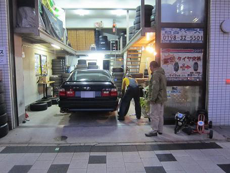
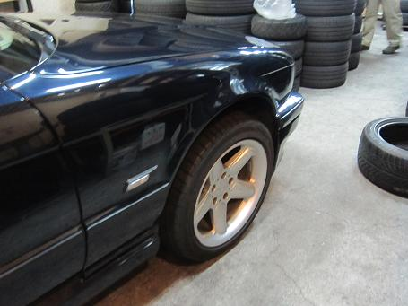
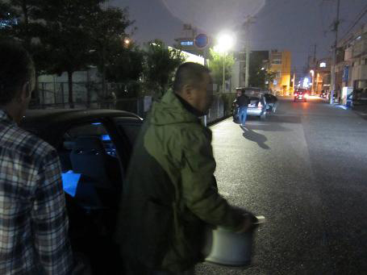
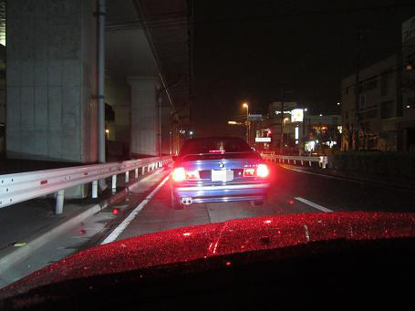

2014/11/9 牛ちゃん号ホイール交換オフ
ホイール受け渡しオフが開催されることになったので集合です！
牛ちゃん号がパチモンのSCHNITZERホイールから本物のSCHNITZERへ交換することになったのだ！

時間が無かったのでタイヤ屋さんで牛ちゃんと待ち合わせ！
牛ちゃん号はＭゴローの持った来たホイールに履き替え！ 預けて一緒にサンシャインワーフへ＾＾

ボーベン号はエンジン不調？で細工中＾＾アイドリングはとても安定しているが・・・？

そんなボーベン号のヒューズＢＯＸを覗くと・・・
謎のリレー短絡とブレーキランプのヒューズが無い・・・（汗
ボーベン号の後ろを走るときは追突に注意ですぞ！（笑

時間になったので牛ちゃん号を引き取りに！
ボーベンさんオススメの「西宮ベース」
ホイールボルトを締めるのを見ていて思ったが、かなりのこだわりを持ってらっしゃるようだ。

本物のSCHNITZERになった牛ちゃん号！ サイドからの見た目はすごくお上品に変身！
ちなみに本物のSCHNITZER（RONAL）は裏面のスポーク付け根部分が肉抜きしてあって軽量なのだ。
表はスポーク部分は外に向かって細くなってホイールは彫が深く見え、車全体を引き締めてくれる。 やっぱり本物はなんとも言えないカッコ良さがある。

路地裏でのアヤシイ取引？！
外したパチモンはＴＩＮＡさんへ！ スタッドレス用に使うそうだ。

前後の見た目はやっぱりイカツイ牛ちゃん号（笑